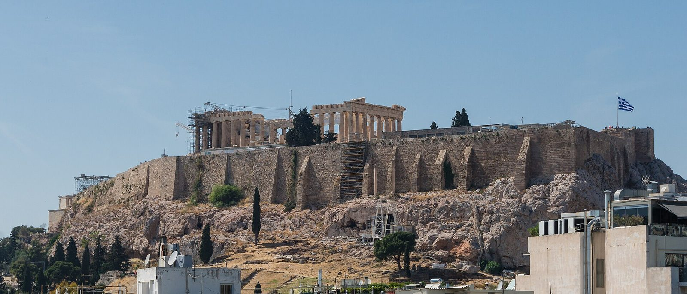
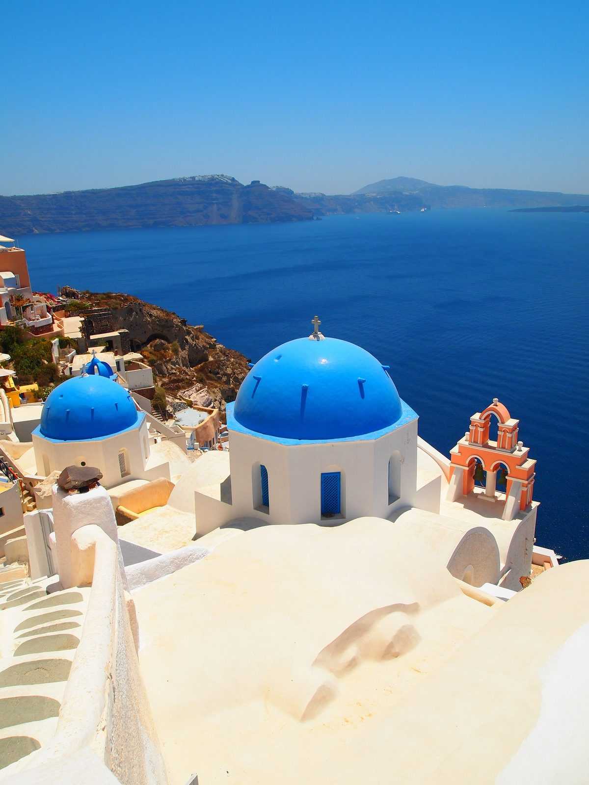
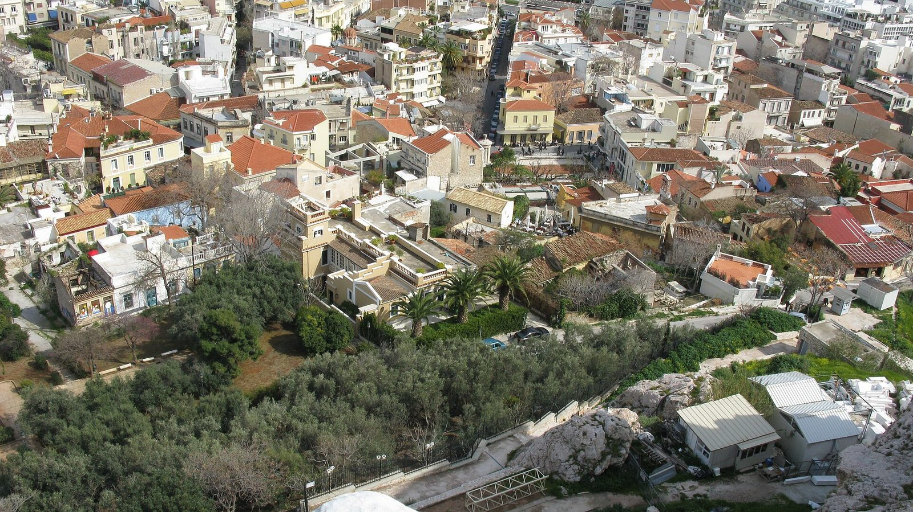
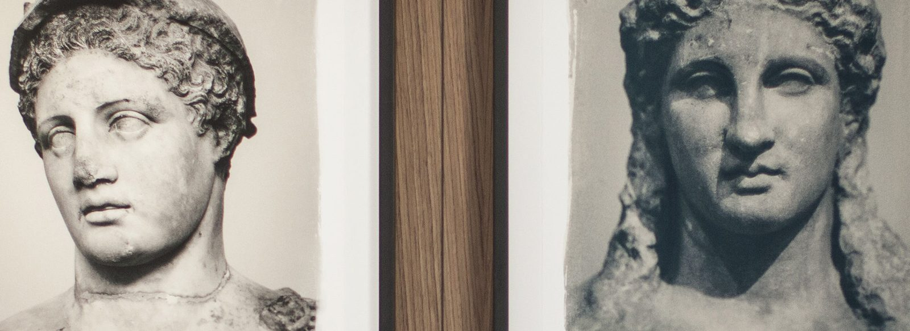
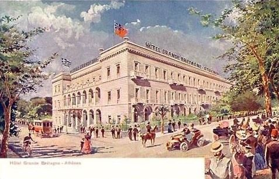
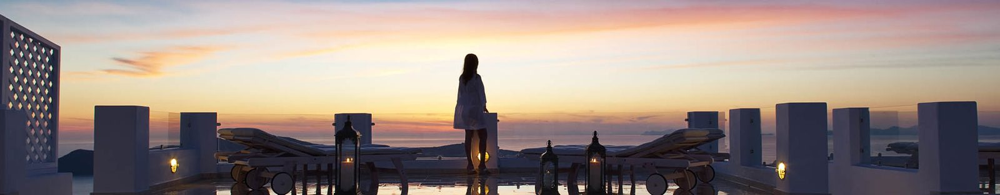
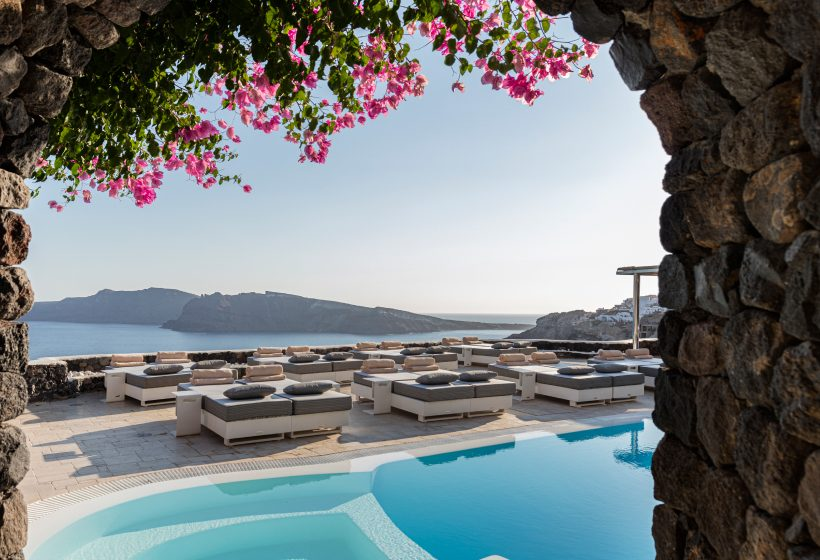

Arrive Athens
Land early-mid afternoon, settle into Plaka, easy evening walk and dinner below the Acropolis.
Ancient ruins meet whitewashed cliffside villages — a few days of history and food in Athens, then caldera views and sunset sailing in Santorini. Alaska just announced the first-ever nonstop between Seattle and Athens, which is what puts this on the list at all. 7 days on the ground, about 8 door-to-door.


Shoulder: September–October — warm, thinner crowds, and squarely inside the new route's operating season.
Peak: July–August (Aegean high season — hottest, most crowded, priciest).
This is a brand-new route: seasonal service, May 12–October 2027, only 3x/week. Build your dates around the schedule, not the other way around.
2 nights at AthensWas (~$375/night) plus 5 nights at Aqua Luxury Suites in Imerovigli (~$450/night) runs lodging to about $3,000; add food, the Aegean hop to Santorini, and excursions and the total lands around $4,600. Trading up to Hotel Grande Bretagne and a caldera-view suite at Canaves Oia is a genuinely different trip — that combination alone can clear $7,000 in lodging before anything else.
Dry heat, comfortable by evening — city stone holds warmth after sunset.
A few degrees cooler than Athens, steady sea breeze — genuinely pleasant, low rain risk.
Land early-mid afternoon, settle into Plaka, easy evening walk and dinner below the Acropolis.
The Parthenon and the Acropolis complex in the morning before the heat and crowds build; the museum in the afternoon.
Official tickets: Acropolis ↗
Ancient Agora and a last wander through Plaka in the morning, then an afternoon flight to Santorini (Aegean Airlines, ~50 min).
Official site: Acropolis Museum ↗Wander Oia's whitewashed lanes by day, claim a spot for the famous sunset by evening.
Swim stops at the volcanic hot springs, sail past the red and white beaches, sunset on the water.
Recommended: Caldera Yachting cruise ↗Assyrtiko tastings with caldera views, then the Bronze Age ruins at Akrotiri — Santorini's "Greek Pompeii."
Official site: Santo Wines ↗Red Beach or Perissa's black sand, or just the hotel pool. Farewell dinner.
Morning flight back to Athens, connect to the nonstop home.
Steps from the Acropolis Museum and Plaka — small (21 rooms), well-reviewed, the value pick in Athens.

Athens landmark since 1874, on Constitution Square — some rooms and the rooftop restaurant look straight at the Acropolis.

Imerovigli, on the caldera rim without the Oia price tag — the value pick in Santorini.

Highest point in Oia, private plunge pools, unobstructed caldera views — the marquee splurge that pushes this destination's budget rating around.
